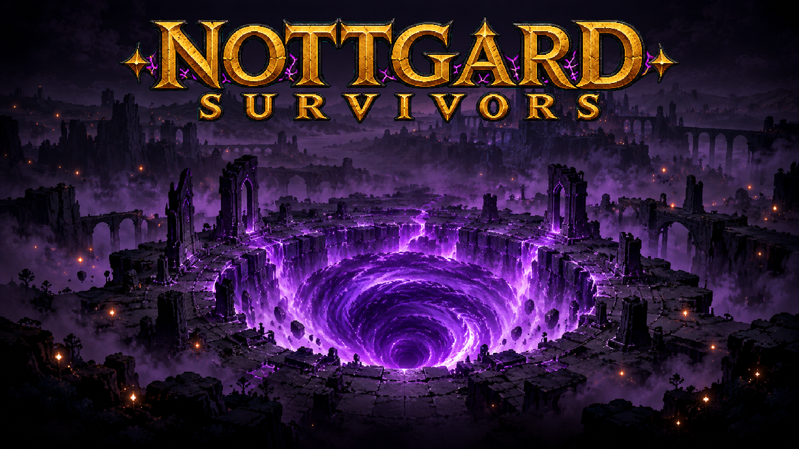
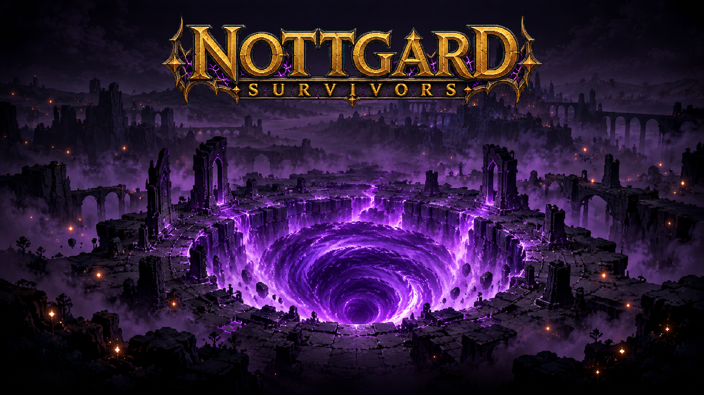

L01 v02 · DRAFT não selecionada
Recomendação histórica; dono escolheu v01
Caixa do quartel 300×48 — tamanho real
Prévia sobre o fundo do título

Composição ilustrativa 1280×720, sem integração no jogo.
PLAN-065 · G1 aceito: “Aprovo L01 v01”. L01 v01 é CANON visual de referência; v02 continua DRAFT não selecionada. Nenhuma admissão runtime. As demais peças seguem para G2.
Grafia conferida: NOTTGARD / SURVIVORS. Prévia técnica aprovada: chave removida, transparência, cortes e redução proporcional verificados. Estilo e leitura da v01 aceitos pelo dono no G1.
Auditoria · Revisão das tiras de Erik/Arlindo
Recomendação histórica; dono escolheu v01

Composição ilustrativa 1280×720, sem integração no jogo.
Escolhida pelo dono — referência para a FILA-026

Composição ilustrativa 1280×720, sem integração no jogo.
G1 concluído: geração das demais peças liberada, começando por L03 Vitória!. O portão G2 e a admissão permanecem separados.